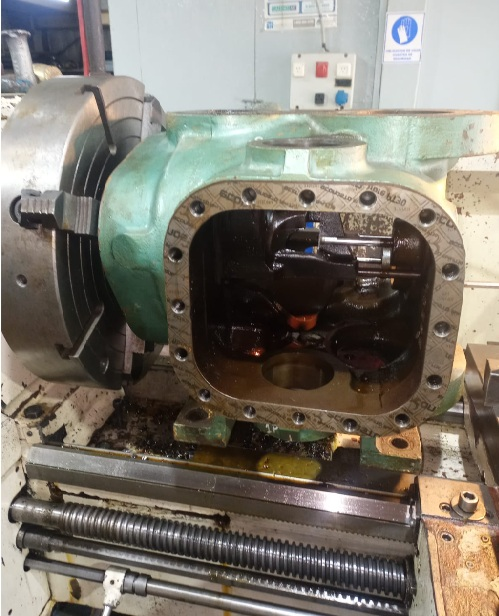
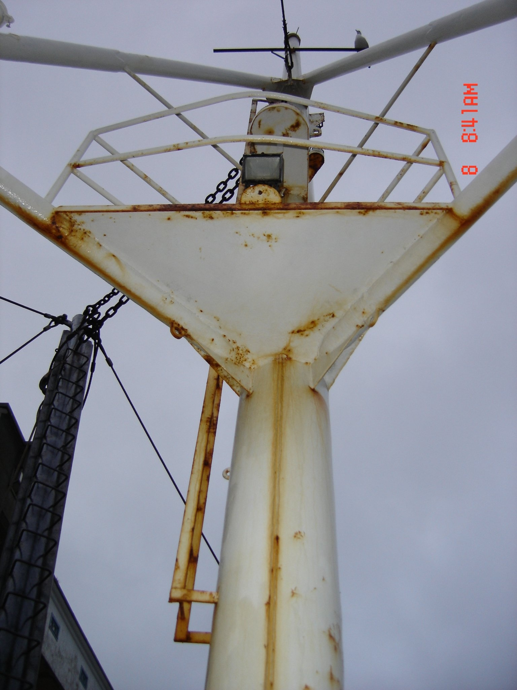
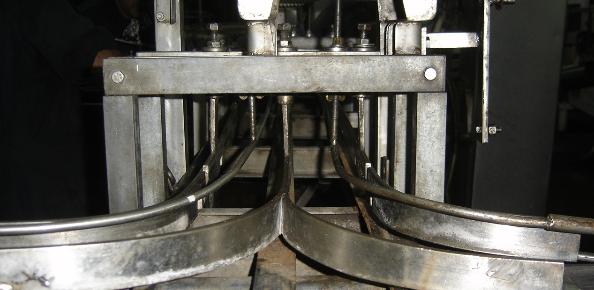
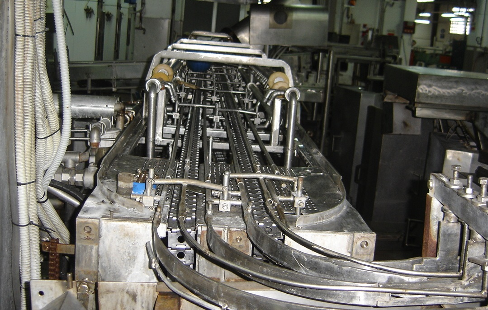
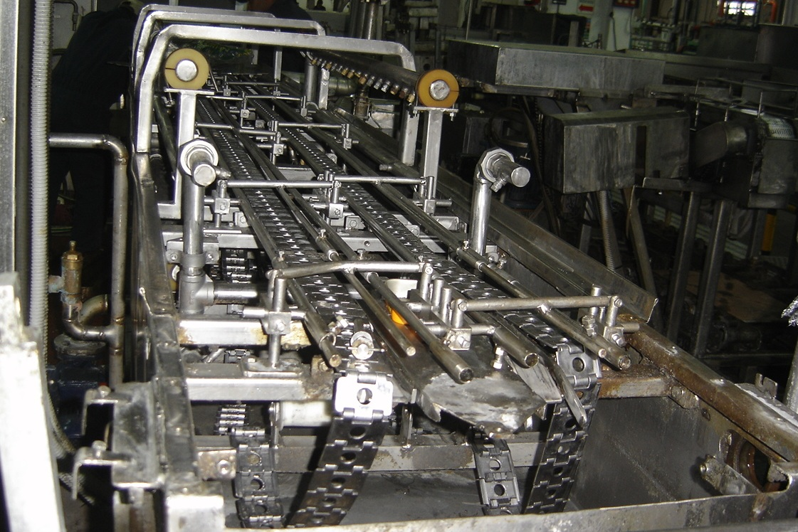
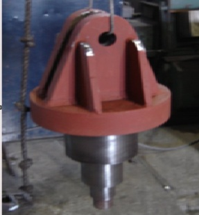
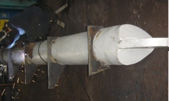
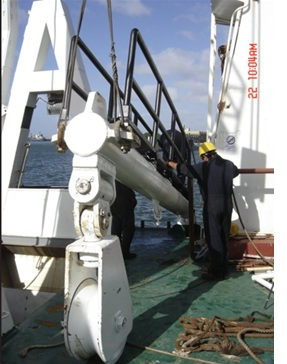

TORNERÍA
Control y mecanizado de eje naval destinado al reemplazo de un piñón de acople, realizando verificación dimensional y puesta en diámetro para su correcta instalación.
Recuperación y puesta en diámetro de un eje naval para reemplazo de piñón de acople. Reacondicionamiento y mecanizado de una válvula de tres vías.
 Inicio
Inicio

FinalizadoMECÁNICA LIGERA
Reparación y mantenimiento de sistema de transmisión naval, realizando el desarme de la caja reductora, extracción del PTO y reemplazo de componentes mecánicos críticos para asegurar la continuidad operativa de los equipos auxiliares del buque.
CALDERERÍA
Renovación integral de palo principal de buque, incluyendo relevamiento dimensional, desarrollo de planos, desmontaje de la estructura original, fabricación completa en taller y posterior montaje a bordo durante la estadía del buque en dique seco. Se realizaron además trabajos de reacondicionamiento estructural, soldadura y terminaciones de protección superficial.

Inicio Proceso
Proceso
 Finalizado
Finalizado
ACERO INOXIDABLE
Reacondicionamiento integral de sistemas de transporte industrial mediante la reparación y modificación de cintas transportadoras. El trabajo incluyó revisión de transmisiones primarias y secundarias, reemplazo de rodamientos y retenes, reparación de soportes de motor, reconstrucción de estructuras de soporte, barillajes y cadenas de acero inoxidable, además de tareas de soldadura TIG (argón), limpieza química y puesta en servicio de los equipos.

Inicio
Proceso
FinalizadoMONTAJES Y ESTRUCTURAS METÁLICAS
Reparación integral de tangones navales mediante desmontaje, mecanizado de componentes, fabricación de nuevos bujes y elementos de desgaste, reemplazo de la placa central de bisagra y posterior montaje a bordo para su puesta en funcionamiento.

Inicio
Proceso
Finalizado